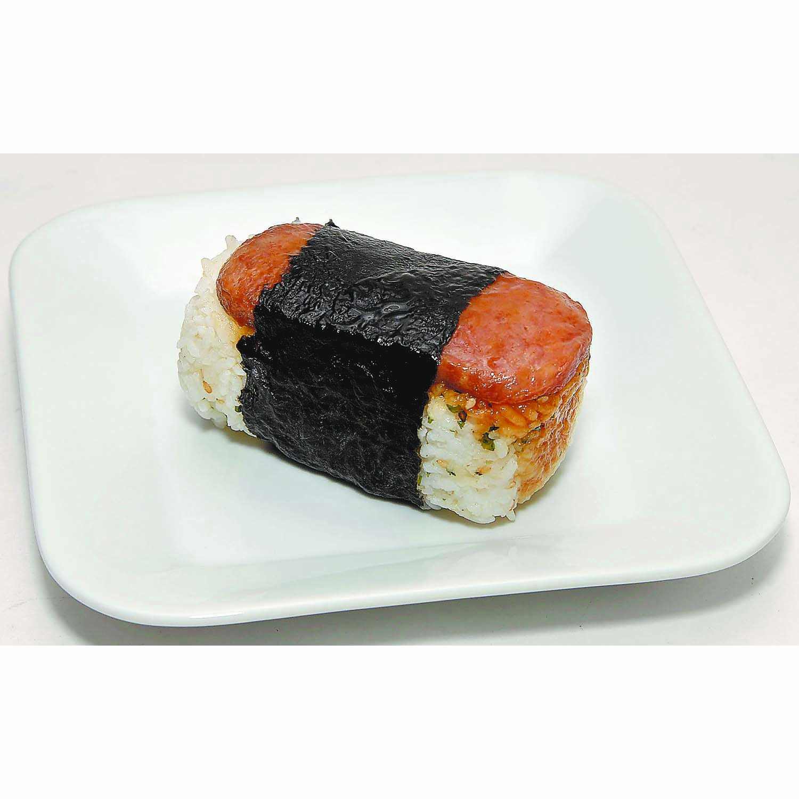

Spam Musubi

Description
A popular Hawaiian snack with grilled Spam on top of rice, wrapped in nori.
Ingredients
- 1 can Spam
- 2 cups sushi rice, cooked
- Nori sheets
- Soy sauce
- Furikake (optional)
- Teriyaki sauce for drizzling (optional)
Steps
- Slice Spam into thin rectangular pieces.
- In a pan, cook Spam until crispy on both sides.
- Lay a sheet of plastic wrap on a flat surface and place
a nori - sheet on top.
- Place a mold on the nori, fill it with rice, and top wi
th a slice - of Spam.
- Sprinkle with furikake if desired.
- Fold the nori over the rice and Spam, sealing the edges
with a bit - of water.
- Slice into bite-sized pieces.
- Optionally, drizzle with teriyaki sauce before serving.